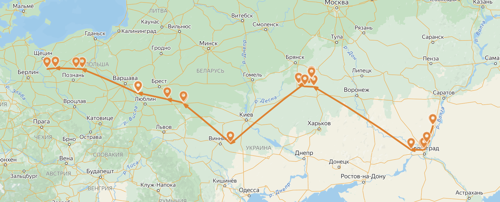

История 86-го и
303-го гвардейских полков
Боевой путь 86-го полка.
Журнал боевых действий
Ветеран 86-го минометного полка
Наградные документы
Документ на Орден Александра Невского
Документ на Медаль «За оборону Заполярья»
Город Хелм
Польское гетто
Боевой путь 303-го полка.
Журнал боевых действий
Ветеран 303-го минометного полка
Наградные документы
Документ на Медаль «За взятие Берлина»
Документ на Медаль «За освобождение Варшавы»